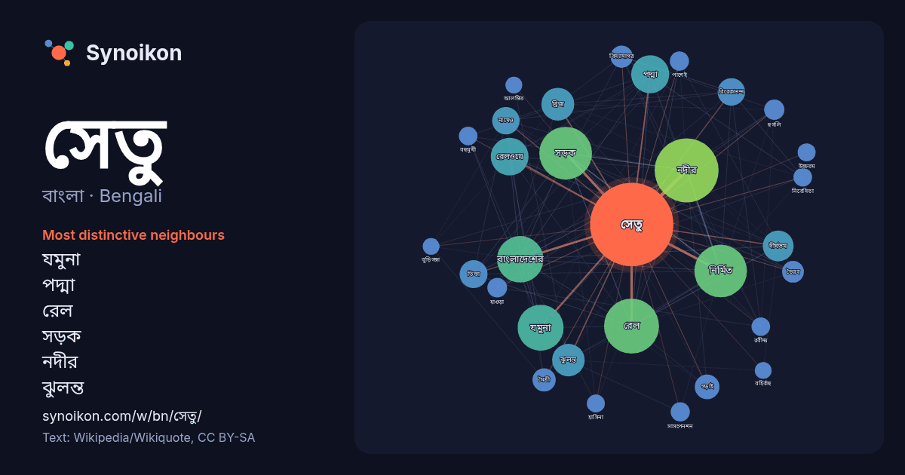

বাংলা · Bengali · word of the day list
সেতু
“bridge” · The words found around it in 1696 instances from Bengali Wikipedia, Wikiquote.

Most distinctive neighbours
- যমুনা 71×
- পদ্মা 52×
- রেল 51×
- সড়ক 50×
- নদীর 43×
- ঝুলন্ত 41×
- ব্রিজ 38×
- দীর্ঘতম 36×
- তিস্তা 32×
- বিবেকানন্দ 29×
- গড়াই 27×
- রেলওয়ে 27×
- নির্মিত 24×
- মৈত্রী 22×
- বিদ্যাসাগর 21×
- ভৈরব 20×
- বাংলাদেশের 18×
- হুগলি 17×
- সাসপেনশন 17×
- নামেও 16×
× = how many times more often than in general Bengali Wikipedia text.
Most frequent neighbours
- নদীর 190
- অবস্থিত 141
- রেল 140
- সড়ক 129
- নির্মিত 128
- বাংলাদেশের 100
- যমুনা 98
- পরিচিত 75
- জেলার 73
- পদ্মা 67
- রেলওয়ে 66
- তৈরি 55
- দ্বিতীয় 53
- নির্মাণ 53
- নামে 52
- ব্রিজ 50
- ঝুলন্ত 49
- মিটার 49
- ভারতের 48
- দীর্ঘতম 44
In context
- সেতু (ইংরেজি: Bridge) হলো নদী বা রেলপথের মতো কোনো প্রতিবন্ধকতা অতিক্রম করার জন্য নির্মিত একটি কাঠামো, যা যানবাহন, পথচারী ও অন্যান্য ভার এক পাশ থেকে অন্য Wikipedia snippets · সেতু
- বহুমুখী সেতু বাংলাদেশের যমুনা নদীর উপরে অবস্থিত একটি সড়ক ও রেল সেতু। ৪.৮ কিলোমিটার দৈর্ঘ্য বিশিষ্ট এই সেতুটি বাংলাদেশের দ্বিতীয় দীর্ঘতম সেতু। ১৯৯৮ সালে Wikipedia snippets · যমুনা সেতু
- পদ্মা সেতু বা পদ্মা বহুমুখী সেতু হচ্ছে বাংলাদেশের পদ্মা নদীর উপর নির্মিত একটি বহুমুখী সড়ক ও রেল সেতু। এর মাধ্যমে মুন্সীগঞ্জের লৌহজংয়ের সাথে শরীয়তপুর Wikipedia snippets · পদ্মা সেতু
- সেতু বা হাওড়া ব্রিজ (সরকারি নাম রবীন্দ্র সেতু) হুগলি নদীর উপর অবস্থিত কলকাতা ও হাওড়া শহরের মধ্যে সংযোগরক্ষাকারী সেতুগুলির মধ্যে অন্যতম। হাওড়া সেতু Wikipedia snippets · হাওড়া সেতু
- শাহ আমানত সেতু বা তৃতীয় কর্ণফুলী সেতু হলো কর্ণফুলী নদীর উপর নির্মিত তৃতীয় সেতু। তৎকালীন প্রধানমন্ত্রী বেগম খালেদা জিয়া ২০০৬ সালের ৮ আগস্টে সেতুটির নির্মাণ Wikipedia snippets · শাহ আমানত সেতু
- “রাষ্ট্রপতি জিল্লুর রহমান রেলওয়ে সেতু” বা “ভৈরব দ্বিতীয় রেলওয়ে সেতু”। সেতু দুটির পাশেই সৈয়দ নজরুল ইসলাম সেতু বা ভৈরব সড়ক সেতু অবস্থিত। ১৯৩৫ সালে ব্রিটিশ Wikipedia snippets · ভৈরব রেলওয়ে সেতু
- নিবেদিতা সেতু হল কলকাতা শহরের কাছে অবস্থিত একটি কেবল-স্টেয়ড সেতু। এটির আগেকার নাম ছিল দ্বিতীয় বিবেকানন্দ সেতু। সেতুটি বিবেকানন্দ সেতুর সমান্তরালে এবং Wikipedia snippets · নিবেদিতা সেতু
- অবস্থিত একটি সেতু। স্থানীয়ভাবে এটি পাটেশ্বরী সেতু নামে পরিচিত। এটি রেল সেতু হিসেবে তৈরি করা হলেও বর্তমানে সড়ক সেতু হিসেবে ব্যবহৃত হচ্ছে। ১৮৮৭ সালে ইংরেজ সরকার Wikipedia snippets · সোনাহাট সেতু
More Bengali words
- অরণ্য
- আয়না
- ইতিহাস
- ঈশ্বর
- কাজ
- কুকুর
- ক্ষমতা
- খাদ্য
- গান
- গ্রীষ্ম
- ঘড়ি
- ঘণ্টা
- ঘোড়া
- ছায়া
- জননী
- জলবায়ু
- জীবন
- ঝড়
- টাকা
- ট্রেন
- দারুচিনি
- দ্বীপ
- নক্ষত্র
- নীরবতা
- পরিবার
- পানি
- পাহাড়
- প্রকৃতি
- বাগান
- বিজ্ঞান
- বিড়াল
- বৃষ্টি
- ভাষা
- মধু
- মরুভূমি
- মানচিত্র
- মৃত্যু
- রাস্তা
- রুটি
- লবণ
- শরৎ
- শহর
- শিল্প
- শীত
- সত্য
- সময়
- সোনা
- স্বাস্থ্য
- হৃদয়
Precomputed on 2026-10-09 with default settings (±5 words, medium corpus). The interactive map can refresh it with live data.